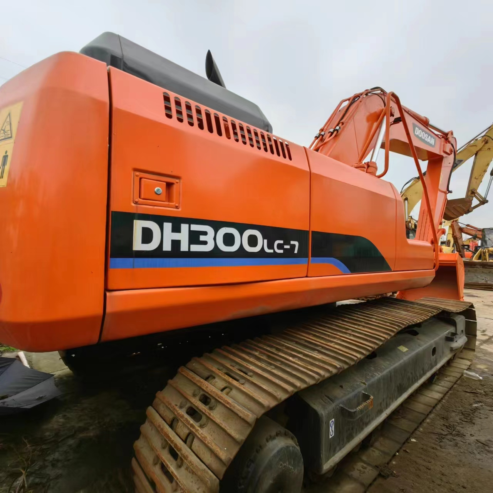

Refurbished Doosan DH300 Excavator
The Doosan DH300 Excavator is a robust, high-performance machine known for its exceptional durability, powerful engine, and versatility in various heavy-duty applications. Whether used in construction, mining, demolition, or other intensive tasks, the DH300 is a go-to solution for operators who need efficiency and reliability. Choosing a refurbished Doosan DH300 allows businesses to benefit from the power and efficiency of a top-tier excavator while enjoying significant cost savings.
Honestly, it's almost impossible to buy a brand new excavator from China. They either don't exist or are made in China. If a Chinese seller tells you their Caterpillar/Komatsu/Volvo/Kobelco/Hitachi is brand new, they're lying. Therefore, a refurbished excavator is your best bet.

Here are the detailed specifications for a refurbished Doosan DH300LC-7 excavator:
Operating Weight and Dimensions
- Operating Weight: 29,000–30,500 kg
- Transport Length: ~10.8–11.2 meters
- Transport Width: ~3.2–3.3 meters
- Transport Height: ~3.3–3.5 meters
- Tail Swing Radius: ~3.5–3.7 meters
- Ground Clearance: ~470–500 mm
- Track Width: 600 mm standard
Engine and Powertrain
- Engine Model: Doosan DE08TIS (Tier 2 compliant)
- Rated Power Output: ~147–155 kW (197–208 hp) @ 1,900 rpm
- Maximum Torque: ~900–1,000 Nm
- Fuel Tank Capacity: ~400–450 liters
- Travel Speed: 3.0–5.0 km/h
- Swing Speed: ~10 rpm
- Gradeability: Up to 35°
Hydraulic System
- Main Pump Type: Variable displacement axial piston pumps
- Flow Rate: ~2 × 280–300 L/min
- System Pressure: Up to 34.3 MPa
- Hydraulic Oil Capacity: ~350–400 liters
- Control System: Load-sensing with flow sharing
- Boom/Arm/Bucket Priority: Configurable via pilot controls
Performance Metrics
- Bucket Capacity: 1.4–1.6 m³ (SAE heaped)
- Max Digging Depth: ~7.2–7.5 meters
- Max Reach (Horizontal): ~10.8–11.2 meters
- Max Dump Height: ~6.8–7.0 meters
- Bucket Digging Force: ~180–190 kN
- Arm Digging Force: ~130–140 kN
Cab and Operator Features
- Cab Type: ROPS/FOPS certified
- Display: Analog gauges or basic LCD monitor
- Controls: Pilot-operated joysticks with auxiliary hydraulic circuit
- Comfort: Adjustable seat, optional HVAC
- Visibility: Wide glass area, LED work lights
Smart Features and Efficiency
- Fuel Efficiency:
- Mechanical fuel injection
- Auto idle and engine shutdown
- Emissions Control: Tier 2 compliant (no DPF/SCR)
- Telematics: Not standard; optional retrofit available
- Transportability: Requires low-bed trailer for 30-ton class
Attachments Compatibility
- Standard Bucket: 1.4–1.6 m³
- Optional Tools: Hydraulic breaker, demolition shear, compactor, ripper
- Quick Coupler: Manual or hydraulic options available
Refurbishment Scope
Refurbished DH300 units typically include:
- Engine Overhaul: Turbocharger, injectors, seals, cooling system
- Hydraulic Restoration: Pump recalibration, valve block testing, hose replacement
- Electrical Diagnostics: Monitor, sensors, wiring harness
- Cab Reconditioning: Seat, joysticks, HVAC, repainting
- Structural Repairs: Boom/bucket welding, bushing replacement, undercarriage rebuild
Overview of the Doosan DH300 Excavator
The Doosan DH300 Excavator is designed for heavy-duty work environments where power, precision, and durability are paramount. Built with an advanced hydraulic system and a powerful engine, the DH300 can tackle challenging earthmoving, digging, and lifting tasks.
Key Specifications of the Doosan DH300
-
Operating Weight: Around 30,000 kg (66,138 lbs)
-
Engine Power: 160 kW (214 hp)
-
Max Digging Depth: Up to 6.6 meters (21.7 feet)
-
Max Reach: Approximately 10.3 meters (33.8 feet)
-
Bucket Capacity: Typically 1.2 to 1.6 cubic meters (42.3–56.6 cubic feet)
-
Fuel Tank Capacity: About 420 liters (111.9 gallons)
-
Travel Speed: Up to 5.3 km/h (3.3 mph)
The Doosan DH300 Excavator is designed to provide efficient performance while ensuring minimal fuel consumption and high productivity. It is ideal for contractors looking for a balance between power and cost-effectiveness.
Power and Performance
At the heart of the Doosan DH300 Excavator is its powerful engine, which delivers impressive performance for large-scale excavation, lifting, and digging projects. The DH300 is engineered to provide optimal power while maintaining fuel efficiency, which can lead to cost savings on long-term projects.
-
Engine Power: The 214 hp engine ensures that the DH300 delivers the strength needed for demanding tasks. This engine power enables the excavator to handle heavy loads and dig through tough soil or rock conditions.
-
Fuel Efficiency: The Doosan DH300 features a fuel-efficient engine that maximizes performance while keeping operational costs in check. The balance between power and fuel consumption is crucial for minimizing costs, especially on extended projects.
-
High Productivity: With its powerful engine and advanced hydraulic system, the DH300 can achieve faster cycle times, allowing operators to complete more work in less time. The powerful hydraulics are also crucial for maximizing the excavator’s digging depth and reach.
Hydraulic System and Efficiency
The hydraulic system of the Doosan DH300 is designed to offer both power and precision. It is optimized to provide smooth and efficient operation, reducing the wear and tear on key components and ensuring greater uptime.
-
Load-Sensing Hydraulics: The DH300 utilizes load-sensing hydraulics, which adjust fluid flow based on the task at hand. This reduces unnecessary fuel consumption and increases operational efficiency, especially in tasks like lifting and digging.
-
Powerful Hydraulics: The hydraulic system on the DH300 delivers a significant digging force, making it highly effective for tasks that require heavy lifting or deep excavation. The hydraulics allow the machine to maintain a consistent performance even under challenging conditions.
-
Attachment Flexibility: The hydraulic system is compatible with a range of attachments, from standard buckets to specialized tools like augers and breakers. This flexibility allows the DH300 to serve multiple functions across different work sites.
Durability and Build Quality
The Doosan DH300 is engineered for long-term durability, ensuring it remains operational in demanding conditions. Its robust design and tough components allow it to endure heavy workloads over many years of use.
-
Heavy-Duty Undercarriage: The undercarriage of the DH300 is built to handle tough environments. Its solid construction ensures stability and reduces the risk of premature wear and tear, even when operating on rough terrain.
-
Reinforced Boom and Arm: The boom and arm of the DH300 are designed from high-strength steel to resist wear and deformation under pressure. This durability ensures the excavator maintains its structural integrity even during heavy-duty tasks.
-
Longevity: With proper maintenance, the Doosan DH300 Excavator can continue to perform reliably for years. The machine’s strong components and robust build are designed to withstand heavy use, making it a valuable long-term investment.
Operator Comfort and Safety
The Doosan DH300 prioritizes operator comfort and safety, ensuring that the machine is easy to control and operate in demanding conditions.
-
Spacious Cab: The DH300 is equipped with a large, comfortable cab that provides excellent visibility and reduces operator fatigue. The ergonomic seat, adjustable controls, and climate control system ensure that operators can work comfortably for long hours.
-
Advanced Controls: The machine’s control system is intuitive and designed for ease of operation, even in tight spaces. Operators can perform delicate tasks like digging with precision or lifting heavy loads without difficulty.
-
Safety Features: The Doosan DH300 Excavator includes advanced safety features such as a rollover protective structure (ROPS) and a falling object protective structure (FOPS). These safety systems protect the operator from potential hazards, making the DH300 a safe machine to operate in challenging environments.
Refurbished Doosan DH300 Excavator: A Smart Investment
Opting for a refurbished Doosan DH300 Excavator presents a cost-effective solution for businesses that require a high-performance machine at a fraction of the cost of new models. Refurbished models are inspected, reconditioned, and updated with new parts as necessary to restore the excavator to near-new performance.
Benefits of a Refurbished Doosan DH300:
-
Cost Savings: Refurbished machines typically cost significantly less than new models—often up to 40-60% less. This makes the Doosan DH300 an attractive option for contractors who need reliable machinery but have a budget to consider.
-
Reliable Performance: A refurbished DH300 is restored to factory standards, ensuring that it delivers the same power and reliability as a new model. With the necessary components replaced and the machine thoroughly inspected, it can serve reliably for many years.
-
Warranty and Support: Many refurbished models come with warranties and offer after-sales support, giving buyers peace of mind that any future issues will be addressed.
Maintenance Tips for the Doosan DH300
Proper maintenance is key to ensuring that the Doosan DH300 continues to perform at its best over time. Below are some essential maintenance tips:
-
Regular Engine Maintenance: Ensure the engine oil is changed regularly and replace air filters as needed to prevent dirt and debris from entering the engine.
-
Hydraulic System Checks: Monitor the hydraulic fluid levels and replace filters regularly. This ensures that the system remains efficient and minimizes wear on hydraulic components.
-
Undercarriage Inspections: Regularly inspect the undercarriage for any signs of damage or excessive wear. Addressing these issues early can prevent more costly repairs in the future.
-
Cab and Safety Features: Check the cab’s safety features, including ROPS and FOPS, to ensure they are functioning properly. Safety should always be a priority on any construction site.
Conclusion
The Doosan DH300 Excavator is a powerful, reliable machine that excels in tough, heavy-duty applications. With its durable construction, strong hydraulics, and efficient performance, it’s an excellent choice for any large-scale excavation, construction, or mining project. Opting for a refurbished Doosan DH300 Excavator provides excellent value, offering the same performance and reliability of a new model at a significantly reduced price.
With proper care and routine maintenance, the Doosan DH300 Excavator can continue to serve as a high-performing, durable asset for many years to come, making it a smart investment for contractors and businesses alike.
Our Commitment
- 2 years / 4000 hours warranty.
- EPA certified.
- No sweatshop labor.
Contacts

- [email protected]
- Youtube Instagram Facebook
- Navigation: G206 (Sishu Bridge) in Changfeng County, Hefei City, Anhui Province, 200 meters north to the east